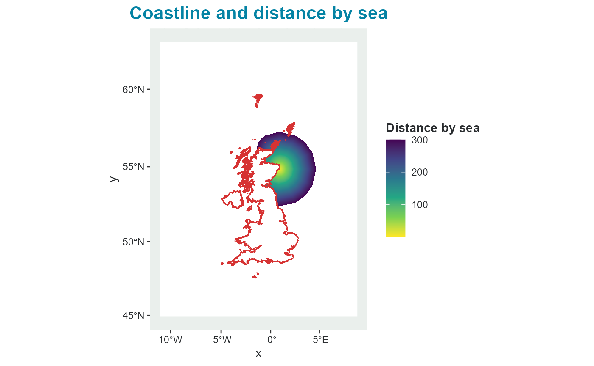
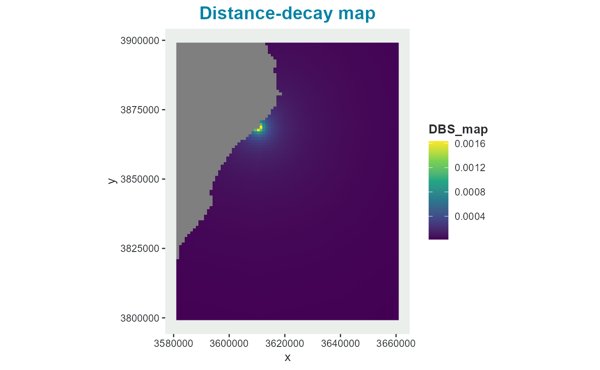
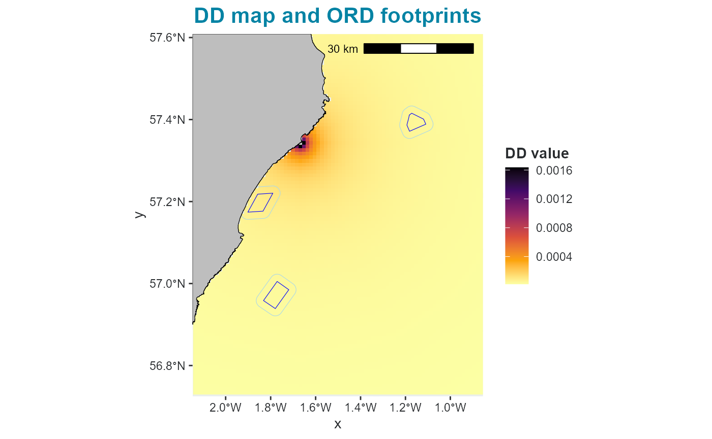
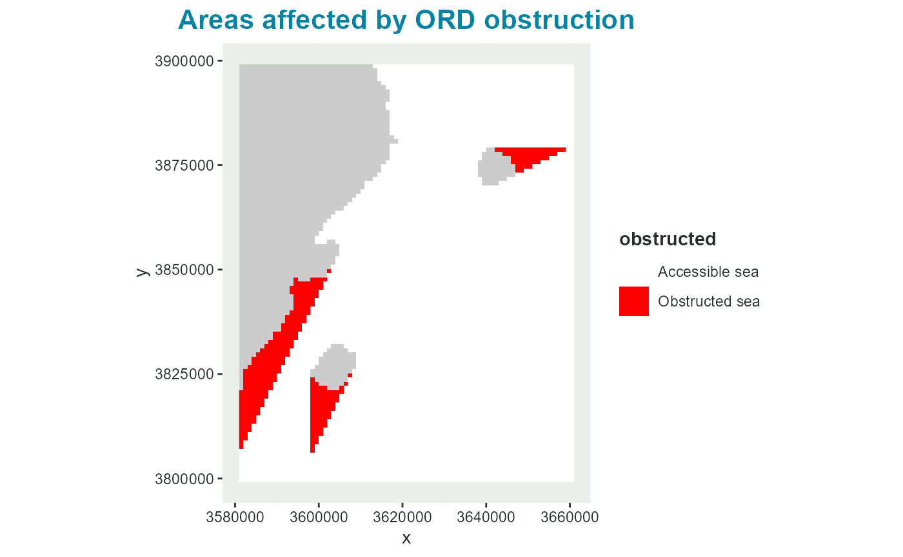

Introduction to distance-decay maps
Throughout this vignette, Offshore Renewable Developments (ORDs) refer to offshore wind farm footprints and associated infrastructure.
In cases where there is no local GPS data available users are recommended to estimate a bird density based on a distance-decay function, and use this as their bird distribution map in the model.
In the previous version of seabORD, which ran on MATLAB, the parameters to be used for creating your distance-decay map would be specified in the interface. This is no longer incorporated within the code and users need to produce their own map.
We provide an example here of how this can be done, using similar parameters to those within the old version of seabORD and the Cumulative Effects Framework (CEF).
We also demonstrate how to assess the potential displacement that will occur given this map and a set of ORDs so that users can gain a better understanding of potential interaction in a given scenario.
This example is for kittiwakes at the Whinnyfold colony near Aberdeen, and the ORDs used are Aberdeen Bay, Hywind and Kincardine, but it should be relatively straightforward to implement this code with your own colony and wind farm footprints, as all you will need to supply is the colony coordinates and your own set of shapefiles for the ORDs.
PLEASE NOTE that the parameters we have used in the distance-decay map creation (foraging range, “fr”, and percentage in foraging range, “pinfr”) are just an example and you will need to make your own judgments here based on existing knowledge of the species and the locality.
This example will include the following steps:
- DBS (Distance By Sea) map
- distance-decay map
- Plotting
- Interaction assessment
1. DBS (Distance By Sea) map
First we set the colony location, in this case Whinnyfold, but you could change this to any colony around the UK that you wish to model.
PLEASE NOTE these calculations will not work if the set location is on land. It needs to be placed beside or on the sea cells so it is not completely obstructed by land cells which are defined as impassable. We recommend checking this with a plot.
#Set the location of an example colony e.g., at Whinnyfold:
example_colony_3035 <- seabORD::set_colony_point(lon = -1.85849,
lat = 57.388807)
# check the colony location is beside sea cells using a plot:
seabORD::plot_colony_location(colony = example_colony_3035)
From this plot we can see that the location is not on the land polygon, so we can proceed with peace of mind.
Now you can create the distance by sea map using the function calc_dist_restricted.
For reproducibility, the code used to calculate the raster is shown below, but because this step can be computationally expensive we load a pre-computed example for the remainder of the vignette.
The flight-grid correction layer is needed as geographic correction is necessary for gdistance calculations of the class Transition as they are made with >4 directions in our instance. This correction layer has been pre-calculated and covers the full map we are using. You can use the provided one as example.
You will also need the seamask, and you can load the example one.
# Load the flight gird correction layer
example_FlightGridcorrection_3035 <- seabORD::get_example_fgc_3035()
# Load in the sea mask of the UK (shows which cells are on land and sea)
example_data_seamask <- seabORD::get_example_seamask()Calculate (slow):
example_DBS_map <- seabORD::calc_dist_restricted(mymap=example_data_seamask,
obspolys=NULL,
targetcoords = example_colony_3035,
FlightGridcorrection_3035 = example_FlightGridcorrection_3035,
directions=16,
obspenalty=1e+08,
maxdist=300)Load example (used throughout this vignette)
example_DBS_map <- seabORD::get_example_DBS_map()
#you can plot it!
seabORD::plot_DBS_map(DBS_map = example_DBS_map)
2. distance-decay map
Now that we have our distance-by-sea map we have our constituent inputs ready to create the distance-decay map.
The inputs which it takes are as follows:
- dmap - the distance by sea map which we just created in step 1
- fr - foraging range (km)
- pinhalf - the proportion of the foraging range within which half of the bird distribution map (utilisation distribution) lies
The function then returns a raster containing the distance-decay-map.
# Set your parameter inputs for distance-decay map function:
dmap <- example_DBS_map
fr <- 150 # set as something sensible for this speces
pinhalf <- 0.95 # value between 0 and 1
# run function:
example_DD_map <- seabORD::calc_birddensmap_dd_pinhalf(dmap, fr, pinhalf)
#You can plot it!
seabORD::plot_DD_map(DD_map = example_DD_map,
colony = example_colony_3035,
crop = TRUE)
3. Plotting
Now that we have made the distance-decay map, let’s plot it with the ORD footprints to check that they overlap.
You can use the example ORDs
# Load in the wind farm polygons.
example_ORDpolys <- seabORD::get_example_ORDpoly(type = "dd")This plotting function adds a buffer around the ORDs.
seabORD::plot_DD_map_with_ORDs(
DD_map = example_DD_map,
ORDpolys = example_ORDpolys,
colony = example_colony_3035
)
4. Interaction assessment
Now using the “calc_dist_restricted” function again, we can calculate the distance to all cells, but this time including the obstruction of the ORDs. The output is a map with distance to the colony from all cells, but including the extra distance to fly around ORD buffers, which can give us a sense of barrier effects, but does not compute them directly.
First let’s calculate the ORDpolys_with_buffer (like on the map above)
example_ORDpolys_with_buffer <- seabORD::set_ORD_buffer(
example_ORDpolys,
bufferwidth = 2
)Since the DD map is normalised, the result can be interpreted as the percentage of density contained within the ORD footprints and their buffers.
#quick assessment of the percentage of the density decay map being occupied by the ORDs and their buffers.
seabORD::calc_pc_in_ORD_buffer(example_DD_map,
example_ORDpolys_with_buffer)
#> [1] 1.156287
# this tells us that just over 1% of the normalised raster is being occupied by ORDs in this case.Now we can calculate the DBS with the ORDs. For reproducibility, the code used to calculate the raster is shown below, but because this step can be computationally expensive we load a pre-computed example for the remainder of the vignette.
Calculate (slow):
# Run function with obstruction from ORDs:
example_DBS_withORDs <- seabORD::calc_dist_restricted (
mymap = example_data_seamask,
obspolys = example_ORDpolys_with_buffer,
targetcoords = example_colony_3035,
FlightGridcorrection_3035 = example_FlightGridcorrection_3035,
directions = 16,
obspenalty = 1e+08, maxdist = 300
)Load example (used throughout this vignette):
example_DBS_withORDs <- seabORD::get_example_DBS_map(type = "ords")The obstruction map identifies locations where travel distances
increase when ORDs are included in the Distance By Sea calculation. Red
cells represent areas where flight paths are altered sufficiently to
exceed the threshold specified by smalltol.
# "smalltol" is a threshold set to remove biologically implausible.
#E.g., 0.1 implies a distance of 100m which isn't overly important, so we recommend this as a minmum
smalltol <- 0.01
#calculates the difference between with and without ORDs:
seabORD::plot_ORD_obstruction(
DBS_map = example_DBS_map,
DBS_withORDs = example_DBS_withORDs,
colony = example_colony_3035,
smalltol = smalltol
)
We can also estimate the percentage of birds that will be displaced per time step. This can be used to estimate the number of birds being displaced per time step by multiplying the proportion of the simulated bird distribution map (utilisation distribution) within the polygon (plus buffer) by the displacement rate and by the colony size.
# calculate percentage in ORD and buffer, and the percentage in the "shadow"/barriered area:
seabORD::summarise_ORD_impact(
DD_map = example_DD_map,
ORDpolys_with_buffer = example_ORDpolys_with_buffer,
DBS_map = example_DBS_map,
DBS_withORDs = example_DBS_withORDs,
smalltol = smalltol
)
#> pc_in_ORD_plus_buffer pc_in_ORD_shadow
#> 1 1.156287 3.600242